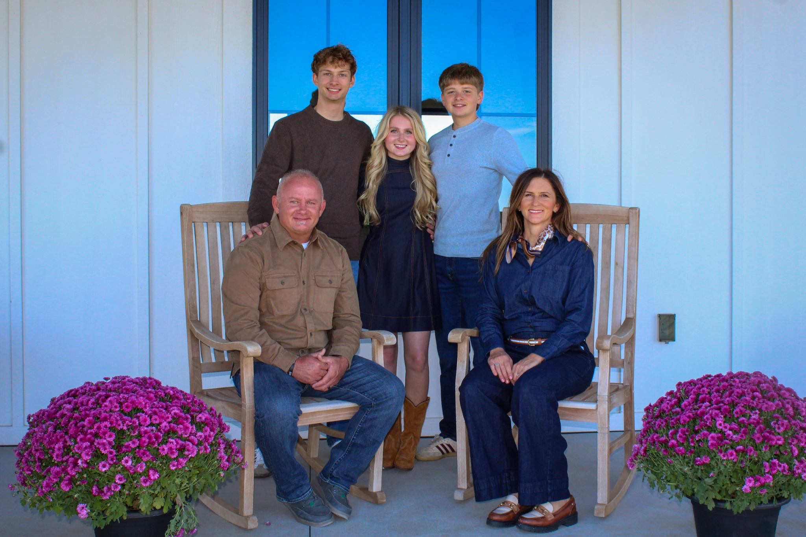
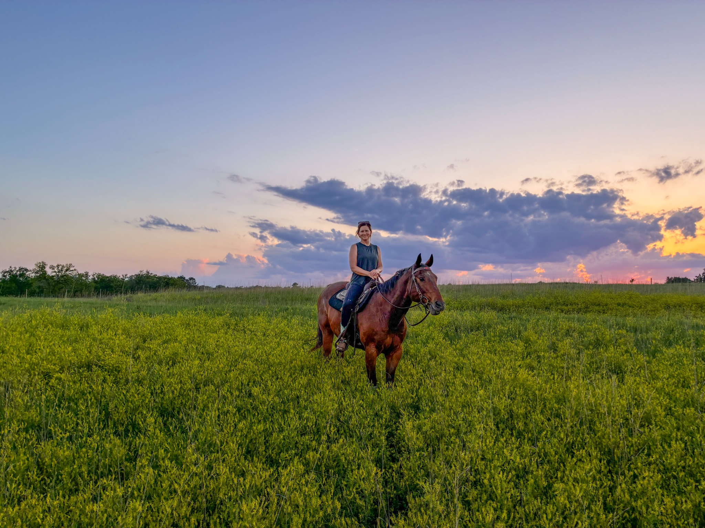
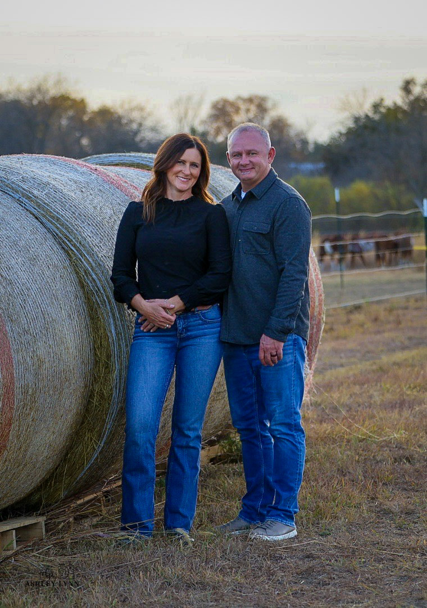

Cognitive Psychology
University of Nebraska–Lincoln
For Malcolm Public Schools • At-Large
For Malcolm School Board
Experience in education.
A commitment to Malcolm.
Rooted in Malcolm
Vanessa Roof is a Malcolm resident, mother, researcher, and education leader who believes strong schools begin with thoughtful decisions and a community that puts students first.
Her children attended Malcolm High School, and her family has grown to love the community they call home. Vanessa is running for the Malcolm Board of Education to put her experience in education, research, student success, and decision-making to work for Malcolm's students, families, teachers, and community.
Education & Leadership
University of Nebraska–Lincoln
Doane College
University of Nebraska–Lincoln
University of Nebraska System
Why I'm Running
“I believe public schools are strongest when students are at the center of every decision.”
Educators should be supported, families should be heard, and board members should be willing to listen, ask thoughtful questions, and make decisions based on both evidence and the people those decisions affect.
Malcolm is more than where my family lives. It is our community. My children attended Malcolm High School, and over the years I have seen firsthand what makes this district special.
My career has given me the opportunity to work in research, counseling, student success, higher education, and data-informed decision-making. I am running because I believe that experience can be put to good use serving Malcolm's students, families, teachers, staff, and community.
A Thoughtful Approach
Principles for listening, learning, and making decisions that serve Malcolm well.
Every major decision should begin with a simple question: how will this help Malcolm's students learn, grow, and prepare for what comes next?
Strong schools depend on talented teachers and staff who feel respected, supported, and equipped to do their best work for students.
Good leadership means asking questions, listening to different perspectives, understanding the facts, and considering the long-term effects of each decision.
Moving forward should never mean losing the relationships, opportunities, and sense of community that make Malcolm a special place to learn and live.
Meet Vanessa
When Vanessa isn't working, you're much more likely to find her outside than behind a desk.
Vanessa and her family live in Malcolm, where life includes horses, three dogs, newly arrived chickens, and plenty of time outdoors. Her children attended Malcolm High School, giving her family a personal connection to the schools she hopes to serve.
Whether she's spending time with family, caring for the animals, or enjoying a Nebraska sunset, Malcolm is the community Vanessa is proud to call home.



Professional Background
Vanessa's professional background spans student success, research, counseling, higher education, and the responsible use of data to support decisions.
Leads work that helps turn complex institutional information into useful reporting, analysis, research, and support for strategic decision-making.
Professional experience focused on understanding student outcomes, institutional effectiveness, reporting, assessment, and the information leaders use to make decisions.
Experience contributing to statewide work connecting education and workforce information to better understand outcomes for Nebraska students.
Her background in psychology and counseling adds another dimension to how she thinks about students: not simply as numbers, but as people with different needs, strengths, and paths to success.